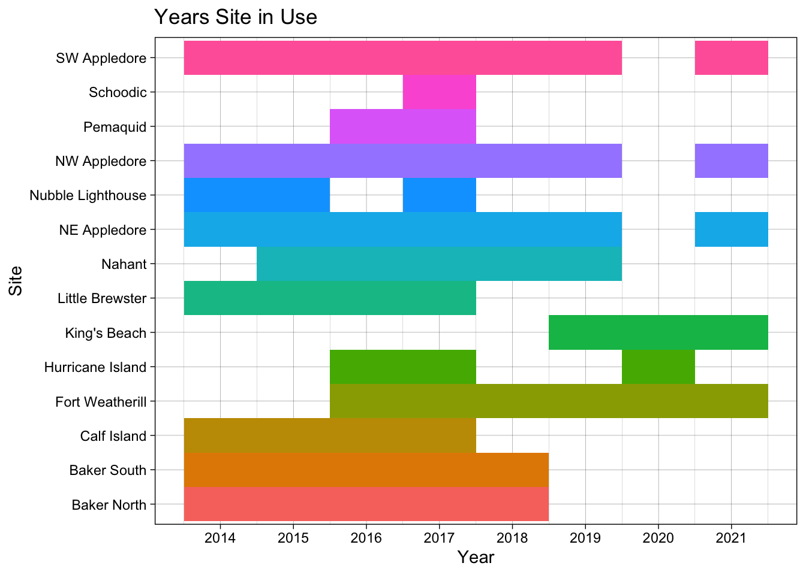
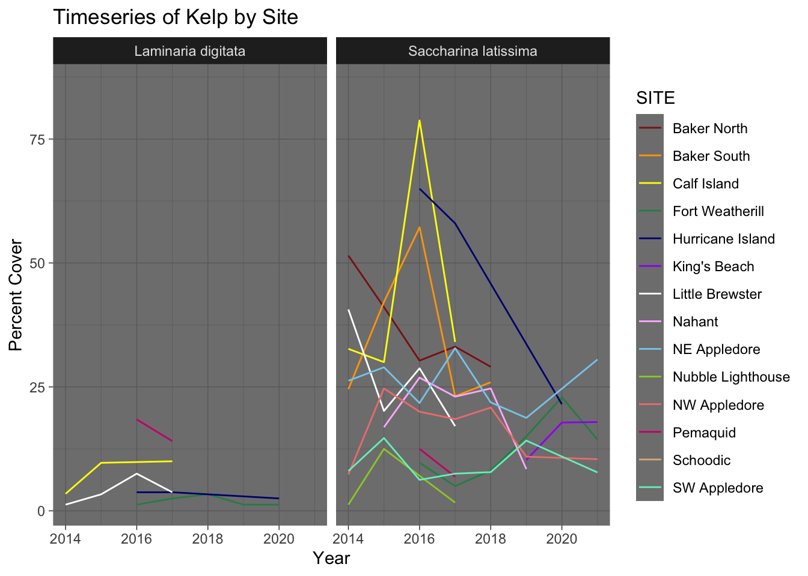
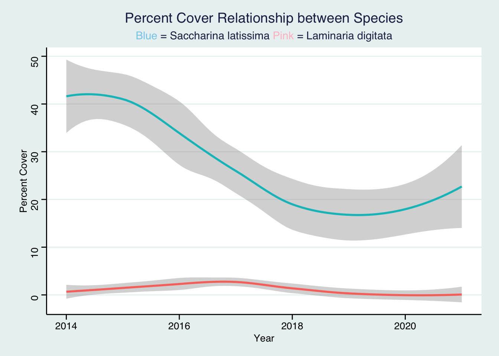
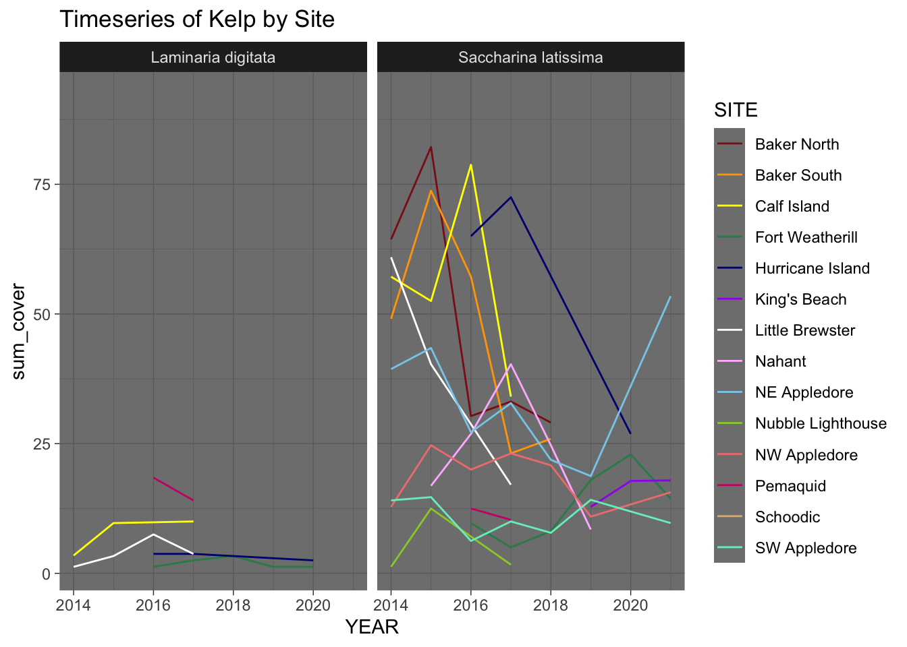

library(readr)
kelp_nd <- read_csv("https://github.com/kelpecosystems/observational_data/blob/master/cleaned_data/keen_cover.csv?raw=true")
kelp_dwn <- read_csv("data/keen_cover.csv")HW3 Tidy Data
BIOL 607
Tidy Data
1 - Load
2 - Format
This data is in long format, due to each variable is only listed once thus causing more rows of data making it longer. Usually the variables are combine with different variables such as time which extends the columns thus making it a wide format.
3 - Check it Out !
3a. Amount of Sites per PI
library(dplyr)
library(tidyr)
kelp_pi <-
kelp_nd |>
select(PI, SITE)Byrnes
#Code Repeated for other PI's
kelp_byrnes <-
kelp_pi |>
filter(PI == "Byrnes") |>
distinct(SITE, .keep_all = TRUE)
n_distinct(kelp_byrnes$SITE)[1] 7Dijkstra
[1] 1Grabowski
[1] 1Humphries
[1] 2Pemaquid
[1] 1Hurricane
[1] 23b. Years of Data per Site
#Code Repeated for other Sites
kelp_site <-
kelp_nd |>
select(SITE, YEAR)
n_distinct(kelp_site$SITE)[1] 14Baker North
# A tibble: 5 × 2
SITE YEAR
<chr> <dbl>
1 Baker North 2018
2 Baker North 2017
3 Baker North 2016
4 Baker North 2015
5 Baker North 2014Baker South
# A tibble: 5 × 2
SITE YEAR
<chr> <dbl>
1 Baker South 2018
2 Baker South 2017
3 Baker South 2016
4 Baker South 2015
5 Baker South 2014Calf Island
# A tibble: 4 × 2
SITE YEAR
<chr> <dbl>
1 Calf Island 2017
2 Calf Island 2016
3 Calf Island 2015
4 Calf Island 2014Little Brewster
# A tibble: 4 × 2
SITE YEAR
<chr> <dbl>
1 Little Brewster 2017
2 Little Brewster 2016
3 Little Brewster 2015
4 Little Brewster 2014NE Appledore
# A tibble: 7 × 2
SITE YEAR
<chr> <dbl>
1 NE Appledore 2021
2 NE Appledore 2019
3 NE Appledore 2018
4 NE Appledore 2017
5 NE Appledore 2016
6 NE Appledore 2015
7 NE Appledore 2014NW Appledore
# A tibble: 7 × 2
SITE YEAR
<chr> <dbl>
1 NW Appledore 2021
2 NW Appledore 2019
3 NW Appledore 2018
4 NW Appledore 2017
5 NW Appledore 2016
6 NW Appledore 2015
7 NW Appledore 2014SW Appledore
# A tibble: 7 × 2
SITE YEAR
<chr> <dbl>
1 SW Appledore 2021
2 SW Appledore 2019
3 SW Appledore 2018
4 SW Appledore 2017
5 SW Appledore 2016
6 SW Appledore 2015
7 SW Appledore 2014Nubble Lighthouse
# A tibble: 3 × 2
SITE YEAR
<chr> <dbl>
1 Nubble Lighthouse 2017
2 Nubble Lighthouse 2015
3 Nubble Lighthouse 2014Nahant
# A tibble: 5 × 2
SITE YEAR
<chr> <dbl>
1 Nahant 2019
2 Nahant 2018
3 Nahant 2017
4 Nahant 2016
5 Nahant 2015Fort Weatherill
# A tibble: 6 × 2
SITE YEAR
<chr> <dbl>
1 Fort Weatherill 2021
2 Fort Weatherill 2020
3 Fort Weatherill 2019
4 Fort Weatherill 2018
5 Fort Weatherill 2017
6 Fort Weatherill 2016King’s Beach
# A tibble: 3 × 2
SITE YEAR
<chr> <dbl>
1 King's Beach 2021
2 King's Beach 2020
3 King's Beach 2019Hurricane Island
# A tibble: 3 × 2
SITE YEAR
<chr> <dbl>
1 Hurricane Island 2020
2 Hurricane Island 2017
3 Hurricane Island 2016Permaquid
# A tibble: 2 × 2
SITE YEAR
<chr> <dbl>
1 Pemaquid 2017
2 Pemaquid 20163c. Impress Yourself / Figure
library(ggplot2)
site_year <-
kelp_site |>
ggplot(mapping = aes(x = YEAR, y = SITE, fill = SITE)) +
geom_tile() +
labs(title = "Years Site in Use",
y = "Site",
x = "Year") +
theme_linedraw() +
theme(legend.position = "None") +
scale_x_continuous(breaks=seq(2014,2022,by=1))
site_year
4 Kelp
4a.
kelp_trim <-
kelp_nd |>
select(YEAR, SITE, TRANSECT, PERCENT_COVER, FAMILY, SPECIES)
kelp_trim# A tibble: 6,222 × 6
YEAR SITE TRANSECT PERCENT_COVER FAMILY SPECIES
<dbl> <chr> <chr> <dbl> <chr> <chr>
1 2014 Baker North 1 2.5 Anomiidae Anomia
2 2014 Baker North 1 7.5 <NA> <NA>
3 2014 Baker North 1 2.5 <NA> Barnacle
4 2014 Baker North 1 10 <NA> <NA>
5 2014 Baker North 1 21.2 <NA> <NA>
6 2014 Baker North 1 1.25 Styelidae Botryllus schlosseri
7 2014 Baker North 1 1.25 Styelidae Botrylloides violaceus
8 2014 Baker North 1 18.8 <NA> <NA>
9 2014 Baker North 1 21.2 <NA> <NA>
10 2014 Baker North 1 7.5 Calyptraeidae Crepidula fornicata
# ℹ 6,212 more rows4b.
kelp_trimer <-
kelp_trim |>
filter(FAMILY == "Laminariaceae") |>
select(!FAMILY)
kelp_trimer# A tibble: 345 × 5
YEAR SITE TRANSECT PERCENT_COVER SPECIES
<dbl> <chr> <chr> <dbl> <chr>
1 2014 Baker North 1 77.5 Saccharina latissima
2 2014 Baker North 2 86.2 Saccharina latissima
3 2014 Baker North 3 31.2 Saccharina latissima
4 2014 Baker North 3 7.5 Saccharina latissima
5 2014 Baker North 4 55 Saccharina latissima
6 2014 Baker South 3 36.2 Saccharina latissima
7 2014 Baker South 3 22.5 Saccharina latissima
8 2014 Baker South 4 32.5 Saccharina latissima
9 2014 Baker South 4 11.2 Saccharina latissima
10 2014 Baker South 1 35 Saccharina latissima
# ℹ 335 more rows4c.
No there are two measurements per species transect each year.
4d.
kelp_cover <-
kelp_trimer |>
group_by(TRANSECT,SITE,YEAR) |>
summarize(sum_cover = sum(as.numeric(PERCENT_COVER)))
kelp_cover# A tibble: 238 × 4
# Groups: TRANSECT, SITE [63]
TRANSECT SITE YEAR sum_cover
<chr> <chr> <dbl> <dbl>
1 1 Baker North 2014 77.5
2 1 Baker North 2015 96.2
3 1 Baker North 2016 55
4 1 Baker North 2017 56.2
5 1 Baker North 2018 33.8
6 1 Baker South 2014 50
7 1 Baker South 2015 70
8 1 Baker South 2016 56.2
9 1 Baker South 2017 26.2
10 1 Baker South 2018 27.5
# ℹ 228 more rows4e.
kelp_plot <-
kelp_trimer|>
ggplot(mapping = aes(x = YEAR, y = PERCENT_COVER, color = SITE)) +
facet_wrap(~SPECIES) +
stat_summary(geom = "line") +
theme_dark() +
scale_color_manual(values = c("firebrick4","Orange", "Yellow", "seagreen", "Navy", "Purple", "White", "plum1", "skyblue", "yellowgreen", "lightcoral", "deeppink3","burlywood", "aquamarine2")) +
labs(title = "Timeseries of Kelp by Site",
y = "Percent Cover",
x = "Year")
kelp_plot
I noticed that the Laminaria digitata species has a lower percent cover as well as less data collected, compared to Saccharina latissima where the percent cover range is larger and more data available.
5 Wide Relationships
5a.
kelp_wide_prep <-
kelp_trimer |>
group_by(TRANSECT,SITE,YEAR, SPECIES) |>
summarize(sum_cover = sum(PERCENT_COVER, na.rm = TRUE))
kelp_wide <-
kelp_wide_prep |>
group_by(SPECIES, sum_cover) |>
pivot_wider(names_from = SPECIES,
values_from = sum_cover)
kelp_wide[is.na(kelp_wide)] = 0
kelp_wide# A tibble: 238 × 5
TRANSECT SITE YEAR `Saccharina latissima` `Laminaria digitata`
<chr> <chr> <dbl> <dbl> <dbl>
1 1 Baker North 2014 77.5 0
2 1 Baker North 2015 96.2 0
3 1 Baker North 2016 55 0
4 1 Baker North 2017 56.2 0
5 1 Baker North 2018 33.8 0
6 1 Baker South 2014 50 0
7 1 Baker South 2015 70 0
8 1 Baker South 2016 56.2 0
9 1 Baker South 2017 26.2 0
10 1 Baker South 2018 27.5 0
# ℹ 228 more rows5c.
library(ggtext)
library(ggthemes)
sp_compar <-
kelp_wide |>
ggplot() +
geom_smooth(aes(x = YEAR, y = `Saccharina latissima`, color = "skyblue", method = "lm")) +
geom_smooth(aes(x = YEAR, y = `Laminaria digitata`, color = "lightpink", method = "lm")) +
labs(title = "Percent Cover Relationship between Species",
subtitle = "<span style = 'color: skyblue;'>Blue</span> = Saccharina latissima <span style = 'color: pink;'>Pink</span> = Laminaria digitata",
x = "Year",
y = "Percent Cover") +
theme_stata() +
theme(plot.subtitle = element_markdown(),
legend.position = "None")
sp_compar
5d.
kelp_wide_prep[is.na(kelp_wide_prep)] = 0
long_graph <-
kelp_wide_prep|>
ggplot(mapping = aes(x = YEAR, y = sum_cover, color = SITE)) +
facet_wrap(~SPECIES) +
stat_summary(geom = "line") +
theme_dark() +
scale_color_manual(values = c("firebrick4","Orange", "Yellow", "seagreen", "Navy", "Purple", "White", "plum1", "skyblue", "yellowgreen", "lightcoral", "deeppink3","burlywood", "aquamarine2")) +
labs(title = "Timeseries of Kelp by Site")
long_graph
I noticed in this there are slight changes to the lines present, especially within the Saccharina latissima species that seems to reach a high sum cover with the NA at zero. The zeros do not completely change the story but it does have an affect on the way we anaylize it.
Meta Questions
1)
Working with data found in the wild is sonmething that I have done in the past but within the lectures I was able to gain a better understanding on manipulating data. When I first examined the data, I noticed the sheer amount of data present was daunting but as you break it down it become a lot more comprehensible.
2)
As stated before this is something that I have done previous but wihtin week 3 I learned a lot more detail and now feel like I have an understanding of data manipulation just need more practice.
3)
In the past I have always created and work with long form datasets and this was truly my first introduction to wide datasets. From the Browman and Woo paper I learned a lot more about proper data organization such as using good names, one value in cell with no empty, backups, etc.
4)
This assignment took a little longer than expected, taking about 3 hours. This may due to issues I had with plotting as well as the repition.
5)
I would give myself a sufficient on this assignment, as I did not go beyond on most of the questions as well I struggled at times.